The computer science academy is a meticulous program with only Pre-AP and AP courses that
focus on the development of computer science skills and the study of the different areas
devoting principally to prepare its students for college-level computer science curriculums.
The computer science academy, being only-of-its-kind program in the state, and the first computer
science program of this kind in Oklahoma, in the computer science academy the science, math, and computer science curriculums
are combined into one, this results in a study of math and science focused for use in computer science problems
Our actual Logo was designed by the 2016-2017 freshman CSA Student Grace Hopper, in her design she displays the Francis Tuttle
Purple duck, the Francis Tuttle Mascot, and arranges the name of our Program to create it.
